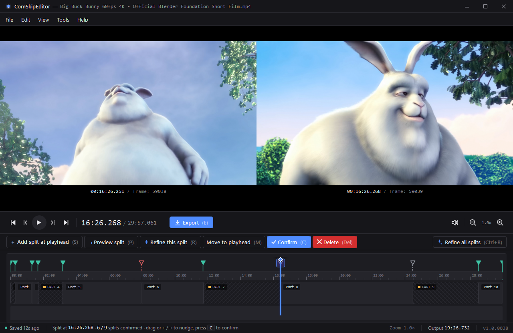
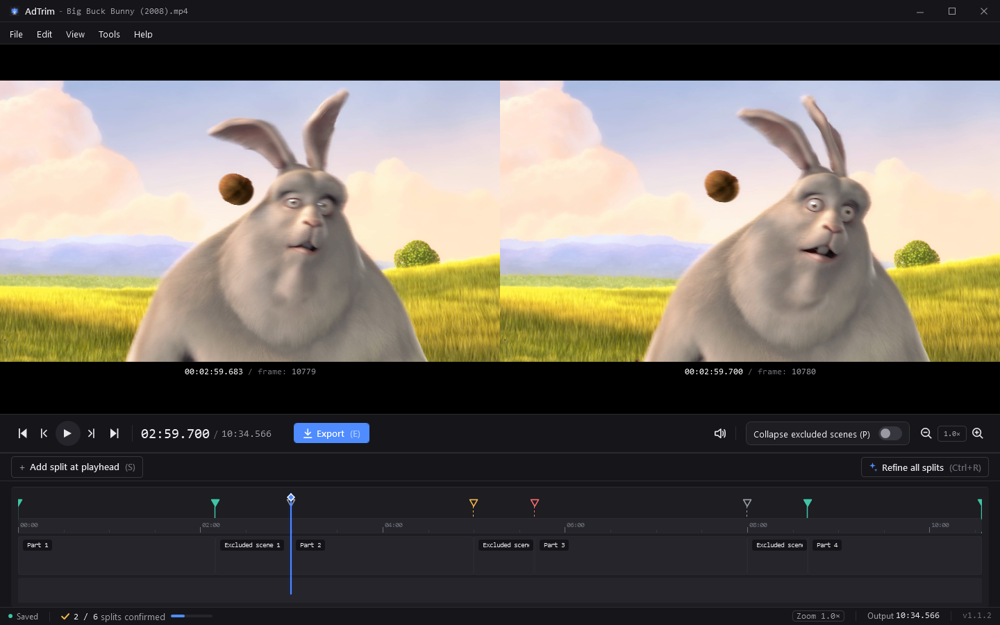
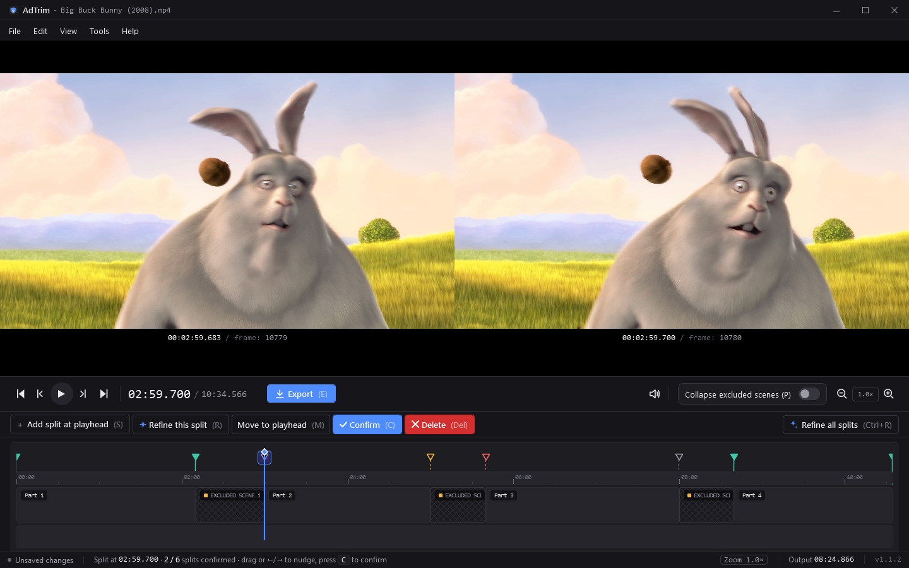
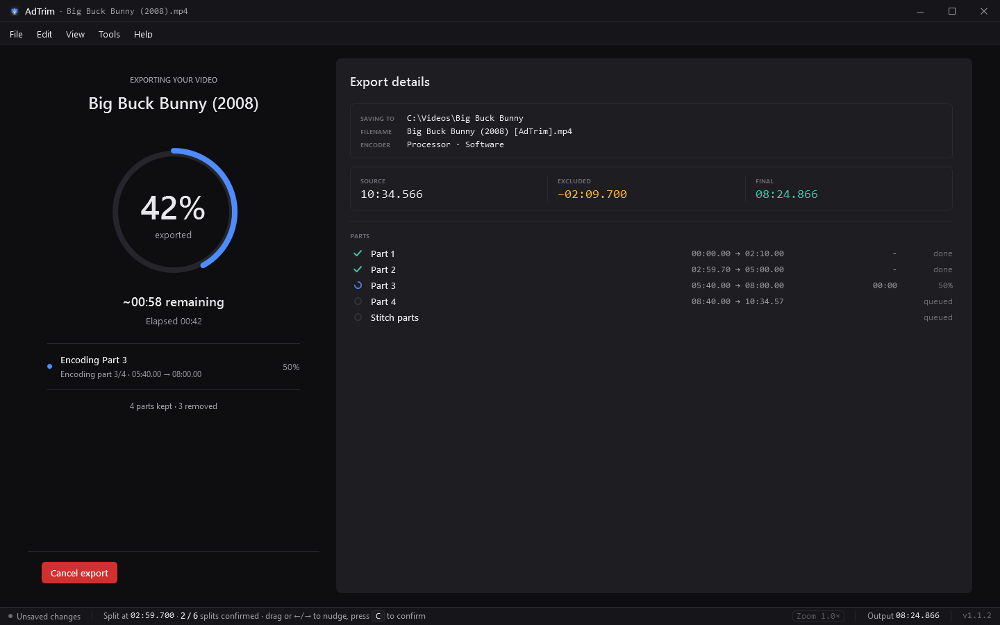

Cut the commercials.
Keep the show.
A frame-accurate, non-destructive editor for trimming ad breaks out of recorded TV, for the kind of people who hand-curate a media library.

Most ad-trim workflows are destructive, slow, and approximate. This one isn't.
Seeks that don't make you wait.
mpv-backed playback lands on a keyframe in milliseconds. The alternative (re-decoding from the nearest I-frame every time) takes whole seconds. You'll feel the difference on every nudge.
Frame-accurate, not "close enough."
Splits are stored as int64 microsecond offsets and refined against the actual frame index. Jog left/right with , / . until the cut sits exactly between the last frame of the show and the first frame of the ad.
Non-destructive by default.
Edits live in a sidecar .adt.json. Trash it and the original recording is byte-identical to what your DVR wrote. Export builds a new merged MP4; the source is never touched.
Three steps from recording to ready to watch.


1. Open your recording
Open an MP4. Existing chapters provide starting points for your cuts.


2. Mark what to remove
Fine-tune the split markers, exclude unwanted sections, and preview what stays.


3. Keep the show
Export a separate [AdTrim] copy. Your original recording stays untouched.
Click a screenshot to enlarge. Sample footage: Big Buck Bunny, © 2008 Blender Foundation, CC BY 3.0. Example edits and export progress shown.
Built for the people who actually watch the library.
Non-destructive sidecar edits
Every split, label, and refinement is written to a .adt.json next to the recording. Source files are read-only.
Frame-accurate timeline
Microsecond-resolution playhead, snap-to-frame on splits, and zoom from full-clip to single-frame in one keystroke.
Auto-refine split boundaries
Use FFmpeg-backed silence, black-frame, and scene-change signals to snap rough chapter boundaries onto cleaner cut frames.
One-click merged export
Export the parts you keep as one MP4, with your segment names preserved as chapters. Use supported NVIDIA, Intel, or AMD hardware encoding, or choose software encoding.
Keyboard-first editing
← → seek · [ ] step 1 second
, . step frame by frame
S split · K toggle keep
R refine · E export
Made for Plex & Jellyfin libraries
Keep the show, season, and episode information from your recording's filename. Trimmed MP4s get an [AdTrim] label so you can tell them apart from the original in your library folder.
Source minus commercials, equals the file you actually wanted.
Drama Series · Season 2, Episode 7
Midpoint
~02:27 remaining
Elapsed 00:42
5 parts kept · 4 removed
Export details
No proprietary codecs. No vendored binaries you can't audit. Every dependency ships with source.
- .NET 10 App runtime · WPF
- mpv Playback engine
- FFmpeg Cut & concat
- NSIS Installer
- Comskip chapters Import source
Your recordings stay private.
AdTrim does not collect usage analytics or upload your recordings, filenames, or hardware information. Update checks download release information from GitHub Pages and compare versions on your computer. GitHub Pages logs IP addresses for security.
Automatic checks are on by default. You can turn them off during setup or under Help → Automatically check for updates. This also stops automatic security-update alerts. Help → Check for updates remains available whenever you choose to use it.
AdTrim v1.0.0000
Free and open source. No ads, no bundled junk, no telemetry, and no account required. Your videos stay on your computer.